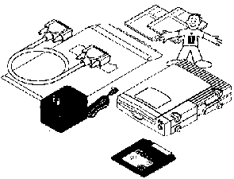
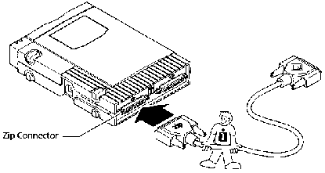
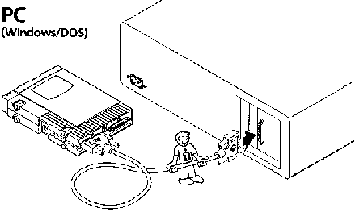
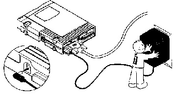

ZIP drajv je ureðaj namenjen korisnicima koji imaju potrebu za prenošenjem podataka veæeg kapaciteta. Znaèi svima kojima je potreban:
- BackUp
- Prostor za multimediju
- Priprema za štampu
- Brzo i lako proširenje kapaciteta postojeæeg Hard diska i sl.
 |
Uz ZIP drajv Vam
pripadaju sledeæe komponente: 1. Data kabl 2. TOOLS ZIP disk i instalaciona disketa 3. Ispravljaè za napajanje ZIP drajva 4. Uputstvo za upotrebu |
 |
Postavite ZIP drajv
odmah uz kuæište kompjutera i povežite ga na
sledeæi naèin: 1. Kraj Data kabla na kome je napisano ZIP, povežite sa konektorom na ZIP drajvu iznad koga piše ZIP. |
 |
2. Drugi kraj Data kabla povežite sa paralell portom na Vašem kompjuteru. Ukoliko imate dva paralell porta, ZIP drajv povežite na prvi (LPT 1). |
 |
3. Konektor na kablu
koji ide iz ZIP transformatora, prikljuèite u ZIP drajv
kao što je pokazano na slici. ZIP drajv na sebi nema prekidaè za napajanje. Fizièkim prikljuèivanjem transformatora u elektriènu mrežu, zatvarate strujno kolo. Budite pažljivi pa tu operaciju uradite u jednom koraku. Kada gurnete utiènicu ZIP transformatora u utikaè nemojte ga više pomerati levo-desno ili gore dole. Tako æete spreèiti uzastopno ukljuèivanje i iskljuèivanje ureðaja za kratko vreme. |
Po pravilu trebalo bi prvo ukljuèiti ZIP drajv a zatim
kompjuter. Kada prestajete sa radom prvo iskljuèite kompjuter pa
ZIP drajv.
Postavlja se pitanje da li ostaviti ZIP transformator u utiènici
ili ga svaki put iskljuèivati iz elektriène mreže. Zatim,
da li ZIP drajv iskljuèivati na konektoru za napajanje u samom
drajvu ili izvlaèenjem transformatora iz zida.
Trebalo bi iskljuèivati transformator iz mreže svaki put
kada ZIP drajv neæete koristiti duže od 2 do 3 èasa.
Zahvaljujuæi "sleep" funkciji magnetni ZIP medij
prestaje da se rotira posle 6 min. od poslednjeg pristupa
informacijama sa njega.